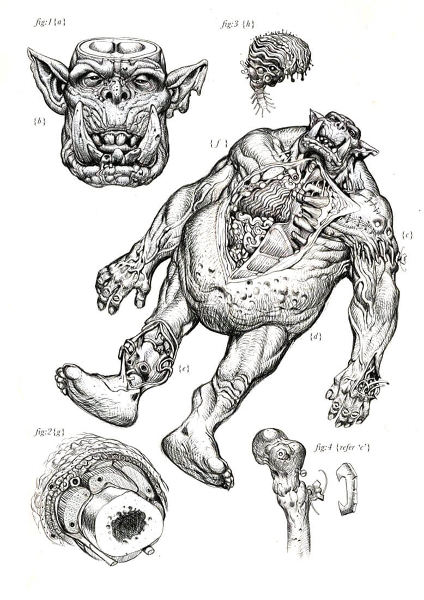
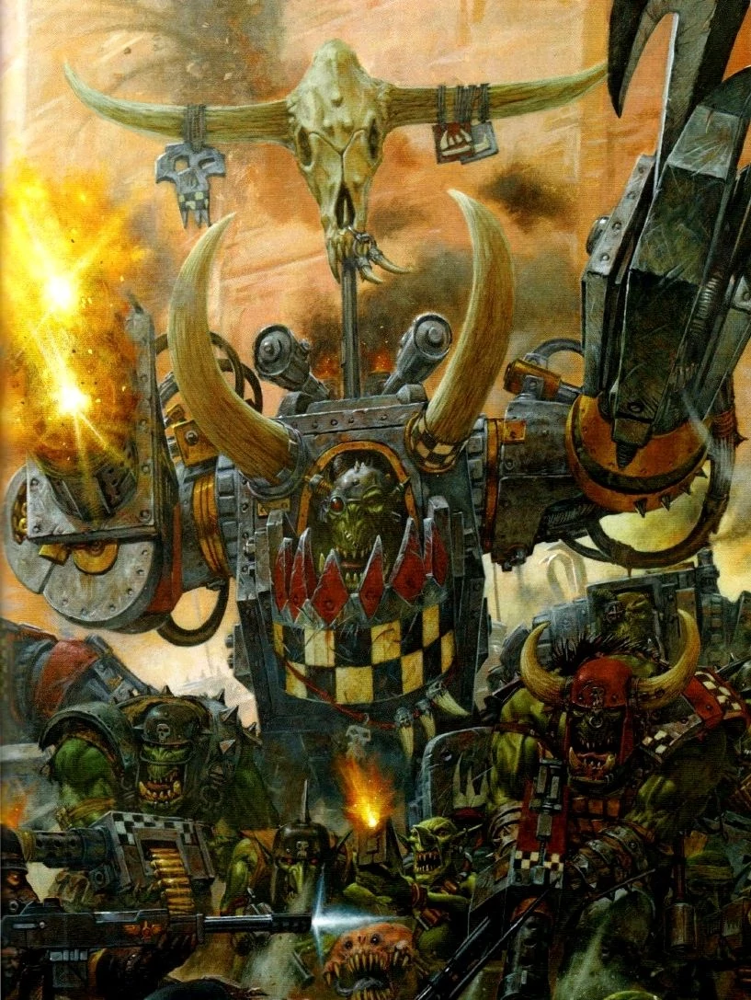
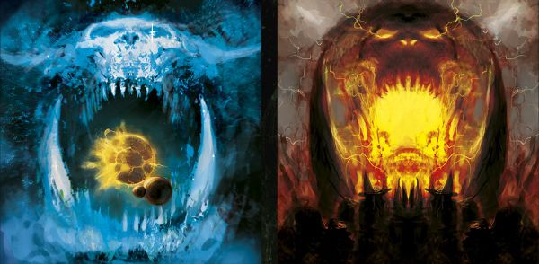

Biology
The Ork brain is quite large, similar in structure to that of a human or Eldar. There is, unusually, a complete lack of fungus or vegetable matter. The most developed part is that of the old brain, controlling more base functions which explain their natural aggression and pack hunting strategies. Finally, much of the Ork body is filled with a spongy mass, presumably to protect what little internal organs the Ork possesses. There are also several gills located around the Ork body, presumably for oxygen absorption. The structure and design of the Ork body provide a strong, tough and resilient system but also running at a low level of complexity. These combine to show that Orks are genetically engineered for combat. Their muscles are extremely strong and their squat bodies can stand immense punishment.
Ghazghkull Mag Uruk Thraka
Ghazghkull Mag Uruk Thraka (usually shortened to Ghazghkull Thraka) is an Ork Warlord of the Goff klan and a mighty prophet of the WAAAGH!. He is the single most influential Ork in the galaxy in the late 41st Millennium, and billions of greenskins march to war in his name. Since Ghazghkull's rise to power, he has led countless campaigns of destruction. He has crushed Aeldari war hosts, banished tides of daemons, and smashed phalanxes of Necrons to so much sparking scrap. Yet his greatest battles have always been fought against the servants of the Emperor of Mankind. Ghazghkull's sheer, unstoppable brutality has left countless worlds of the Imperium blazing in his wake and reduced the mighty Hive World of Armageddon, during the Second and Third War for Armageddon, to a never-ending cauldron of bloody battle. Yet Ghazghkull is not satisfied. Gork and Mork have greater plans for their prophet, plans they see fit to deliver amid agonising visions of a galaxy ablaze with green fire. At their behest, Ghazghkull is beginning his greatest work. He is an infamous individual for to his actions in the second and third Armageddon Wars and is considered extremely megalomaniacal, even for an Ork, convinced he is blessed by the Ork Gods themselves.
Gork and Mork
The difference between the twin Greenskin Gods is simple: Gork is brutal but cunning, while Mork is cunning but brutal. To make this comprehensible, one has to think like an Ork (a debatable proposition at best); Mork hits you when you aren't looking and Gork hits you even harder when you are. Like their own species, the Greenskins believe that when facing the Gods of the other intelligent races of the galaxy their deities can be defeated but never entirely extinguished; like the Orks themselves, they will always come back, spoiling for the next fight. The Orks believe that Gork and Mork are personal Gods; i.e. they will offer divine aid to those Orks who ask for it, if they are found deserving, but it does not matter which of the two Gods an Ork prays to, since they are essentially interchangeable. However, if a distinction were to be made, it could be said that Gork is the favoured God of the average Greenskin as the manifestation of the physical power that defines the Orks, while Mork is the favoured deity of the Oddboyz, the cunning Orks who do more than just fight to keep the Ork species moving forward to the next battle.
